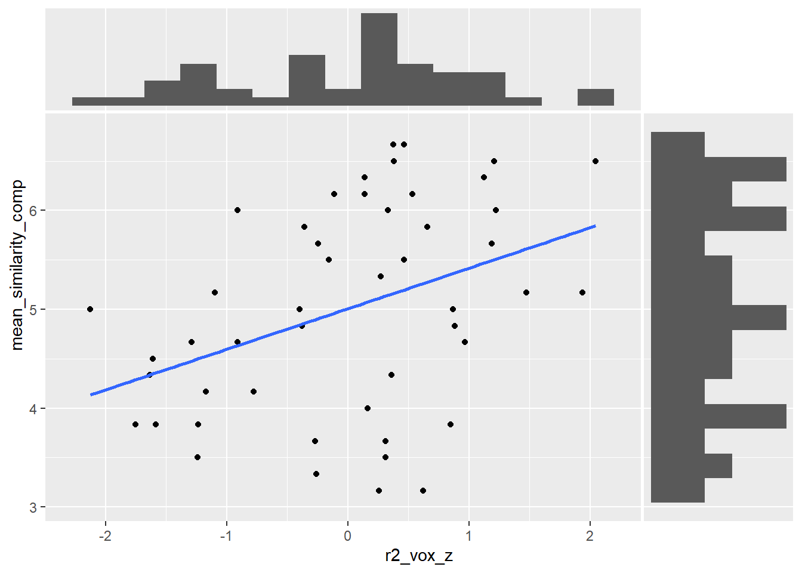
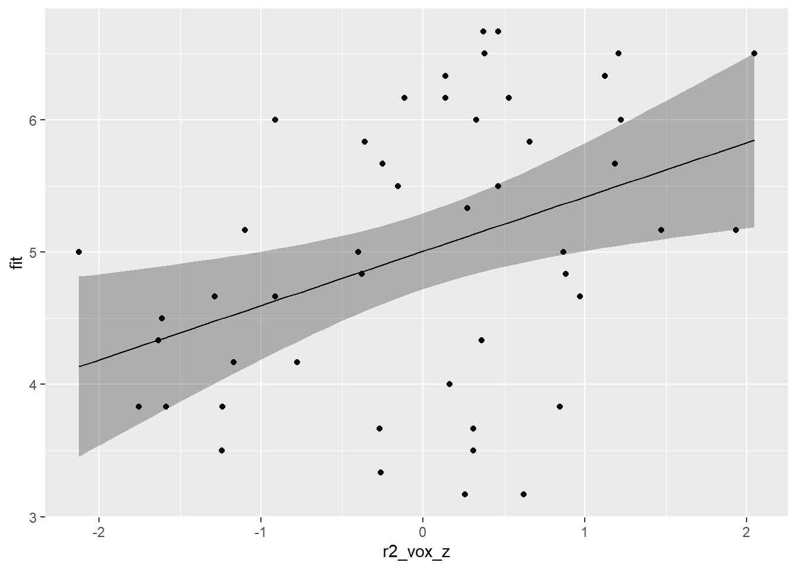
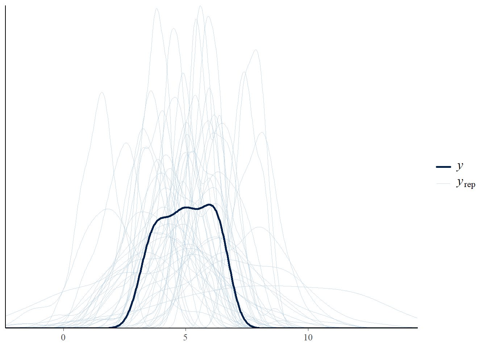
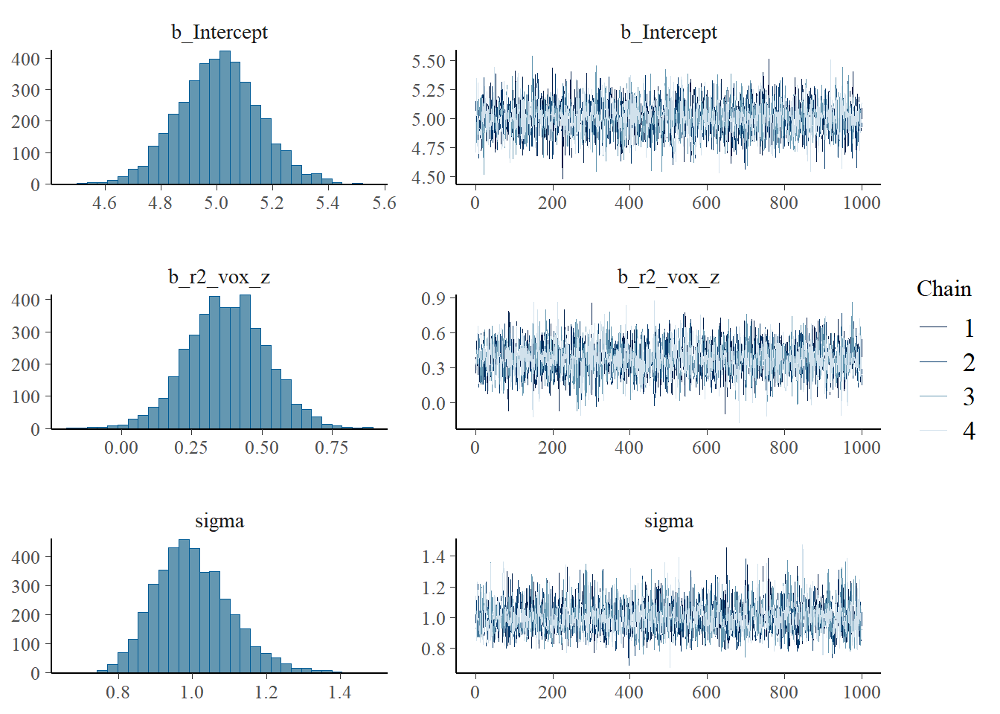
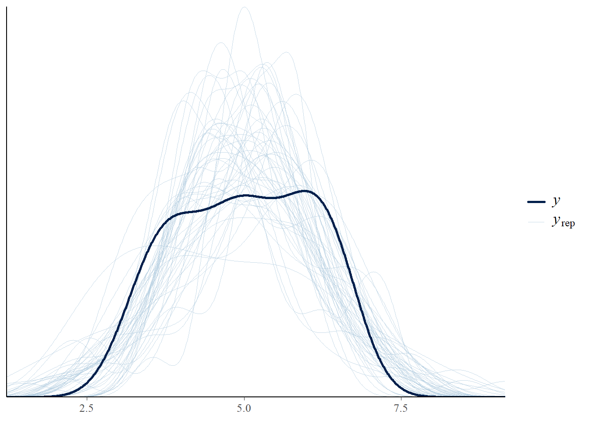
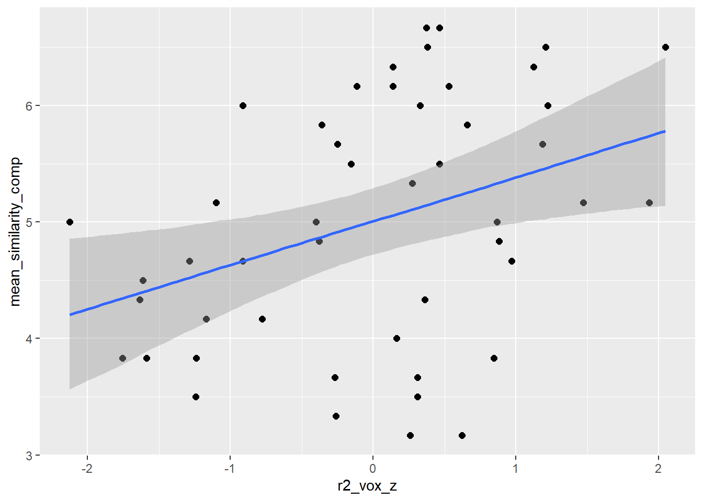
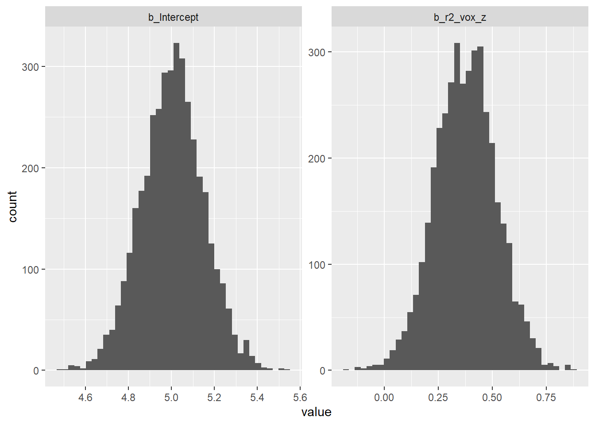

library(tidyverse) # data wrangling and plotting
library(ggside) # extends ggplot with marginal histograms
library(brms) # our main package for Bayesian regression modeling!
library(tidybayes) # visualizing posterior uncertaintyIntro
In this tutorial, I walk through a basic Bayesian linear regression model using the brms package in R. This tutorial assumes that readers are already familiar with ordinary least squares regression using lm() and have some basic familiarity with Bayesian modeling concepts, such as priors, likelihoods, and posterior distributions. The goal is to show how to fit, check, and interpret a Bayesian linear regression model in R using brms.
Setup
Data and Variables
In this tutorial, we will use brms to investigate whether neural alignment during conversation predicts perceived similarity after the conversation. The dataset includes dyads who were either friends or strangers.
Neural alignment is measured using reconstruction (R^2) values, stored in the variable r2_vox. The outcome variable is the dyadic average of perceived similarity, stored as mean_similarity_comp.
Load data
First, we load and wrangle the data. We standardize r2_vox using a z-score transformation so that the regression coefficient can be interpreted as the expected change in perceived similarity for a 1-sd increase in neural alignment. We then create df, the main dataframe for this tutorial, which contains the standardized predictor r2_vox_z and the outcome variable mean_similarity_comp.
SRM_df <- read.csv("dyadsrm_metrics_glasser_generate.csv") %>%
dplyr::select(dyad, group, r2_vox)
behav_df <- read.csv("behav_measures.csv") %>%
dplyr::select(dyad, group, mean_similarity_comp)
df <- SRM_df %>%
inner_join(behav_df, by = c("dyad", "group")) %>%
mutate(r2_vox_z = as.numeric(scale(r2_vox)))
glimpse(df)Rows: 48
Columns: 5
$ dyad <int> 104, 105, 107, 108, 109, 113, 114, 116, 117, 121,…
$ group <chr> "stranger", "stranger", "stranger", "stranger", "…
$ r2_vox <dbl> 0.09122112, 0.08711615, 0.10054018, 0.10646721, 0…
$ mean_similarity_comp <dbl> 3.833333, 5.000000, 4.666667, 4.833333, 5.166667,…
$ r2_vox_z <dbl> -1.7554784, -2.1265395, -0.9130995, -0.3773362, 1…There are 48 dyads in total, each belongs to either the ‘stranger’ or ‘friend’ group. For now, we will ignore group membership and fit a simple Bayesian linear regression model using only neural alignment as a predictor of perceived similarity. Later, we will return to the group variable and examine whether accounting for group status changes the results.
Exploratory Data Analysis (EDA)
Before fitting the Bayesian model, we first inspect the relationship between neural alignment and perceived similarity. The marginal histograms show the distribution of each variable separately. Perceived similarity scores range from approximately 3 to 7, while standardized neural alignment values range from about -2 to 2.
df %>%
ggplot(aes(x = r2_vox_z, y = mean_similarity_comp)) +
geom_point() +
stat_smooth(method = "lm", formula = 'y ~ x', se = FALSE) +
geom_xsidehistogram(bins = 15) +
geom_ysidehistogram(bins = 15) +
scale_xsidey_continuous(breaks = NULL) +
scale_ysidex_continuous(breaks = NULL) +
theme(ggside.panel.scale = 0.25)
The plot suggests a positive (but noisy) association between neural alignment and perceived similarity! Dyads with higher r2_vox_z tend to report higher similarity. We will quantify this association more formally using Bayesian linear regression below.
Next, we compute basic descriptive statistics and check whether either variable contains missing values.
df %>%
pivot_longer(cols = c(r2_vox_z, mean_similarity_comp)) %>%
group_by(name) %>%
summarise(mean = mean(value),
sd = sd(value),
n_missing = sum(is.na(value))) # A tibble: 2 × 4
name mean sd n_missing
<chr> <dbl> <dbl> <int>
1 mean_similarity_comp 5.01e+ 0 1.06 0
2 r2_vox_z -4.59e-18 1 0There are no missing values for either r2_vox_z or mean_similarity_comp. The mean perceived similarity score is approximately 5.01, with a standard deviation of about 1.06. The standardized neural alignment variable has a mean close to 0 and a standard deviation close to 1.
Warm up: Ordinary Least Squares (OLS) regression
Before diving into Bayesian modeling, let’s warm up with the familiar lm() function. This gives us a useful baseline and reminds us of the key variables. We are predicting perceived similarity, mean_similarity_comp, from standardized neural alignment, r2_vox_z.
fit_ols <- lm(data = df, mean_similarity_comp ~ r2_vox_z)
summary(fit_ols)
Call:
lm(formula = mean_similarity_comp ~ r2_vox_z, data = df)
Residuals:
Min 1Q Median 3Q Max
-2.0953 -0.6419 0.1557 0.8597 1.5061
Coefficients:
Estimate Std. Error t value Pr(>|t|)
(Intercept) 5.0069 0.1426 35.102 <2e-16 ***
r2_vox_z 0.4102 0.1441 2.845 0.0066 **
---
Signif. codes: 0 '***' 0.001 '**' 0.01 '*' 0.05 '.' 0.1 ' ' 1
Residual standard error: 0.9882 on 46 degrees of freedom
Multiple R-squared: 0.1497, Adjusted R-squared: 0.1312
F-statistic: 8.096 on 1 and 46 DF, p-value: 0.006603The OLS model gives us our first hint that something is going on. r2_vox_z has a positive slope, and the association is statistically significant under the usual frequentist framework. Nice!
We can also visualize the fitted OLS regression line and its 95% confidence interval.
nd <- tibble(r2_vox_z = seq(from = min(df$r2_vox_z),
to = max(df$r2_vox_z),
length.out = 50))
predict(fit_ols,
interval = "confidence",
newdata = nd) %>%
data.frame() %>%
bind_cols(nd) %>%
ggplot(aes(x = r2_vox_z)) +
geom_ribbon(aes(ymin = lwr, ymax = upr), alpha = 1/3) +
geom_line(aes(y = fit)) +
geom_point(data = df,
aes(y = mean_similarity_comp))
Bayesian Linear Regression
Now we finally move on to Bayesian modeling. As noted earlier, we will use the brms package. The main function, brm(), works somewhat like lm() in that we still use familiar formula syntax: mean_similarity_comp ~ r2_vox_z. The difference is that Bayesian modeling also requires us to think about the likelihood, priors, MCMC settings, and posterior uncertainty. That may sound like a lot, but don’t worry too much. For now, we’ll start only with priors.
Default Priors
If you are not sure what priors to use, brms provides default priors. We can inspect them using brms::get_prior().
get_prior(data = df,
mean_similarity_comp ~ r2_vox_z,
family = gaussian()
) prior class coef group resp dpar nlpar lb ub
(flat) b
(flat) b r2_vox_z
student_t(3, 5, 2.5) Intercept
student_t(3, 0, 2.5) sigma 0
source
default
(vectorized)
default
defaultThe output tells us which parameters need priors in this model. For this simple Bayesian linear regression, the main parameters are:
- the intercept
- the slope for
r2_vox_z sigma, the residual standard deviation
The default prior for the slope of r2_vox_z is listed as flat. This means that brms is not putting much prior information on the slope by default. The intercept gets a Student-t prior centered around 5, which makes sense because the outcome variable mean_similarity_comp is centered near 5. The residual standard deviation, sigma, also gets a Student-t prior with a lower bound of 0, because standard deviations cannot be negative.
These defaults are usable, but for this tutorial we will specify our own weakly informative priors so that the assumptions of the model are more explicit.
Set Priors
As I just said, we can also set our own priors. For this model, I use weakly informative priors because I do not want to assume a strong relationship between neural alignment and perceived similarity before seeing the data.
I set the intercept prior to be centered around 5. I use a skeptical prior centered at 0 for the slope. Finally, I use a lognormal prior for sigma, the residual standard deviation, because sigma must be positive.
my_priors <- c(
prior(normal(5, 1.5), class = "Intercept"),
prior(normal(0, 0.5), class = "b"),
prior(lognormal(0, 0.5), class = "sigma")
)Before fitting the model to the actual outcome data, we first run a prior-only model. Setting sample_prior = "only" tells brms to simulate data from the priors without updating them with the observed outcome. This is useful for checking whether our priors imply plausible values of perceived similarity.
fit_brm_prior <- brm(
data = df,
mean_similarity_comp ~ r2_vox_z,
family = gaussian(),
prior = my_priors,
iter = 2000,
chains = 4,
seed = 20,
sample_prior = "only"
)After fitting the prior-only model, we can check which priors were used:
prior_summary(fit_brm_prior) prior class coef group resp dpar nlpar lb ub source
normal(0, 0.5) b user
normal(0, 0.5) b r2_vox_z (vectorized)
normal(5, 1.5) Intercept user
lognormal(0, 0.5) sigma 0 userThe prior_summary() output confirms that the model is using the priors we specified.
Prior predictive check
Before fitting the model to the observed data, we run a prior predictive check. This shows what kinds of outcome values the model can generate using only the priors, before learning from the data.
This is not meant to perfectly match the observed data. Instead, we are checking whether the priors generate values that are at least plausible for mean_similarity_comp. Here we use brms::pp_check()
pp_check(fit_brm_prior, ndraws=50)
Well it doesn’t look very good and the predictives are generally too broad, but it’s at least not absurdly weird. Most simulated datasets generate similarity scores in or near the observed range, although some prior predictions extend beyond the 1–7 scale.
Fit Bayes model with priors
Now that the priors are set, we can fit the main Bayesian regression model. This model uses the observed data to update the priors and produce posterior distributions for the intercept, slope, and residual standard deviation.
Here, we set sample_prior = TRUE, which saves prior draws along with the posterior draws. This can be useful if we later want to compare prior and posterior distributions.
fit_brm_1 <- brm(
data = df,
mean_similarity_comp ~ r2_vox_z,
family = gaussian(),
prior = my_priors,
iter = 2000,
chains = 4,
seed = 20,
sample_prior = TRUE
)Markov Chain Monte Carlo (MCMC) diagnostics
Before interpreting the model results, we should check whether the MCMC sampler behaved well. The brms::plot() function gives us two useful diagnostics for each parameter: a posterior distribution plot on the left and a trace plot on the right.
plot(fit_brm_1, widths = 2:3)
For the trace plots on the right side, we want the chains to look like fuzzy caterpillars. In other words, the chains should mix together without obvious trends or drifting over time. Here, the chains look well mixed for the intercept, slope, and sigma, which suggests that the sampler did not have obvious convergence problems.
Model results
Now results! We can use summary() to inspect the posterior estimates for the model parameters. By default, brms::summary() reports 95% credible intervals, but we can request other intervals, such as 80%, 90%, or 99%, using the prob argument.
summary(fit_brm_1) Family: gaussian
Links: mu = identity; sigma = identity
Formula: mean_similarity_comp ~ r2_vox_z
Data: df (Number of observations: 48)
Draws: 4 chains, each with iter = 2000; warmup = 1000; thin = 1;
total post-warmup draws = 4000
Regression Coefficients:
Estimate Est.Error l-95% CI u-95% CI Rhat Bulk_ESS Tail_ESS
Intercept 5.01 0.14 4.72 5.29 1.00 3466 2961
r2_vox_z 0.38 0.14 0.10 0.66 1.00 4158 3028
Further Distributional Parameters:
Estimate Est.Error l-95% CI u-95% CI Rhat Bulk_ESS Tail_ESS
sigma 1.00 0.10 0.82 1.23 1.00 3737 3012
Draws were sampled using sampling(NUTS). For each parameter, Bulk_ESS
and Tail_ESS are effective sample size measures, and Rhat is the potential
scale reduction factor on split chains (at convergence, Rhat = 1).# Other examples:
# summary(fit_brm_1, prob = .80)
# summary(fit_brm_1, prob = .90)The intercept is about 5.00. This means that when
r2_voxis at its average value, the expected similarity score is approximately 5.00.The slope for
r2_vox_zis about 0.38. This means that for every 1 standard deviation increase inr2_vox, mean perceived similarity is expected to increase by about 0.38 points.The 95% credible interval for the slope is [0.09, 0.65]. This interval does not include 0, suggesting a positive association between neural alignment and perceived similarity in this model.
All Rhat values are 1.00, and the effective sample sizes are large. This suggests no obvious convergence problems.
draws <- as_draws_df(fit_brm_1)
mean(draws$b_r2_vox_z > 0)[1] 0.995This gives the posterior probability that the slope is greater than zero. In this case, the result is 0.997, meaning that about 99.7% of the posterior draws for the slope are positive. This is a useful Bayesian summary of the direction of the association. Let me return to as_draws_df() in a few code chunks.
Posterior predictive check
Next, we run a posterior predictive check. This is similar to the prior predictive check, but now the model has been fit to the observed data.
The basic question is:
If this model were true, would simulated data from the model look similar to the data we actually observed?
pp_check(fit_brm_1, ndraws=50)
The dark line shows the observed distribution of mean_similarity_comp, and the light blue lines show simulated datasets from the fitted model. The model does a reasonable job capturing the overall center and spread of the observed similarity scores, although the observed distribution is a bit flatter than many of the simulated distributions.
Compare with OLS
We can also compute a focused summary of the Bayesian regression coefficients using brms::fixef(). By default, fixef() reports posterior means. If we set robust = TRUE, it reports posterior medians instead.
fixef(fit_brm_1) Estimate Est.Error Q2.5 Q97.5
Intercept 5.0054720 0.1447401 4.72147257 5.2894680
r2_vox_z 0.3764805 0.1417793 0.09548644 0.6579378# If we want to use median:
# fixef(fit_brm_1, robust = TRUE)These estimates look familiar, right? The Bayesian model gives an intercept and slope that are very similar to the OLS estimates. This is expected here because we are fitting a simple Gaussian linear regression with weakly informative priors.
cbind(coef(fit_ols),
sqrt(diag(vcov(fit_ols))),
confint(fit_ols)) 2.5 % 97.5 %
(Intercept) 5.0069444 0.1426401 4.7198249 5.2940640
r2_vox_z 0.4101539 0.1441495 0.1199959 0.7003118The OLS and Bayesian estimates are close, but the interpretation is different. In the OLS model, the interval is a frequentist confidence interval. In the Bayesian model, the interval is a posterior credible interval.
Visualization
Coefficients
Let’s get the main regression line plot with conditional_effects(). This plots the relationship between r2_vox_z and mean_similarity_comp, along with uncertainty around the fitted line.
conditional_effects(fit_brm_1) %>%
plot(points = TRUE)
The blue line shows the model’s estimated relationship between neural alignment and perceived similarity, and the gray ribbon shows the uncertainty around that fitted line. The points are the observed data.
Parameter distributions
One of the nice things about Bayesian modeling is that we can work directly with the full posterior distributions of the model parameters, not just point estimates. We can extract the posterior draws from a fitted model using brms::as_draws_df().
draws <- as_draws_df(fit_brm_1)
glimpse(draws)Rows: 4,000
Columns: 12
$ b_Intercept <dbl> 4.954366, 5.028863, 5.014997, 4.966033, 5.084960, 4.89…
$ b_r2_vox_z <dbl> 0.2482303, 0.5310256, 0.3516985, 0.4252662, 0.3887591,…
$ sigma <dbl> 1.0226341, 0.9900557, 0.9929083, 0.9935381, 0.9709848,…
$ Intercept <dbl> 4.954366, 5.028863, 5.014997, 4.966033, 5.084960, 4.89…
$ prior_Intercept <dbl> 6.211616, 6.534947, 2.697560, 6.062472, 7.417916, 4.24…
$ prior_b <dbl> -0.51645745, 0.57045691, -0.19605796, 0.36136789, 0.22…
$ prior_sigma <dbl> 0.7238576, 1.5800676, 0.7102229, 1.0496273, 1.1559378,…
$ lprior <dbl> -1.923069, -2.330354, -2.016404, -2.131547, -2.052147,…
$ lp__ <dbl> -69.21556, -69.24740, -68.65819, -68.73736, -68.76834,…
$ .chain <int> 1, 1, 1, 1, 1, 1, 1, 1, 1, 1, 1, 1, 1, 1, 1, 1, 1, 1, …
$ .iteration <int> 1, 2, 3, 4, 5, 6, 7, 8, 9, 10, 11, 12, 13, 14, 15, 16,…
$ .draw <int> 1, 2, 3, 4, 5, 6, 7, 8, 9, 10, 11, 12, 13, 14, 15, 16,…Notice that this object contains thousands of posterior draws, along with some metadata such as chain number, iteration number, and draw number. The columns beginning with b_ are the regression coefficients from the model.
To get a feel for the full posterior distributions of the regression coefficients, we can plot them directly:
as_draws_df(fit_brm_1) %>%
as_tibble() %>%
pivot_longer(starts_with("b_")) %>%
ggplot(aes(x = value)) +
geom_histogram(bins = 40) +
facet_wrap(~ name, scales = "free")
These histograms show the posterior distributions of the intercept and slope. Most of the slope distribution lies above 0, which matches our earlier conclusion that the association between neural alignment and perceived similarity is likely positive.
We can also summarize these posterior distributions with simple descriptive statistics, such as the posterior mean, posterior standard deviation, and 95% credible interval.
as_draws_df(fit_brm_1) %>%
as_tibble() %>%
pivot_longer(starts_with("b_")) %>%
group_by(name) %>%
summarise(mean = mean(value),
sd = sd(value),
lower = quantile(value, probs = 0.025),
upper = quantile(value, probs = 0.975))# A tibble: 2 × 5
name mean sd lower upper
<chr> <dbl> <dbl> <dbl> <dbl>
1 b_Intercept 5.01 0.145 4.72 5.29
2 b_r2_vox_z 0.376 0.142 0.0955 0.658This gives results very similar to summary(fit_brm_1), but here we are computing them directly from the posterior draws. For the intercept, the posterior mean is about 5.00, with a 95% credible interval from about 4.72 to 5.29. For the slope, the posterior mean is about 0.38, with a 95% credible interval from about 0.09 to 0.65.
Model comparison
Adding an Interaction to the model
So far, we have fit a simple model predicting perceived similarity from neural alignment. This model treats all dyads as coming from one pooled group. However, our data include both friend dyads and stranger dyads. This matters because friends may generally report higher similarity than strangers, regardless of their neural alignment.
To account for this, we fit an interaction model with group as an additional predictor.
fit_brm_2 <- brm(
data = df,
mean_similarity_comp ~ r2_vox_z * group,
family = gaussian(),
prior = my_priors,
iter = 2000,
chains = 4,
seed = 20,
sample_prior = TRUE
)The interaction term asks whether the slope of r2_vox_z differs between friend and stranger dyads.
Model results
summary(fit_brm_2) Family: gaussian
Links: mu = identity; sigma = identity
Formula: mean_similarity_comp ~ r2_vox_z * group
Data: df (Number of observations: 48)
Draws: 4 chains, each with iter = 2000; warmup = 1000; thin = 1;
total post-warmup draws = 4000
Regression Coefficients:
Estimate Est.Error l-95% CI u-95% CI Rhat Bulk_ESS
Intercept 5.69 0.13 5.42 5.94 1.00 3360
r2_vox_z 0.22 0.13 -0.04 0.48 1.00 2564
groupstranger -1.51 0.19 -1.86 -1.13 1.00 3472
r2_vox_z:groupstranger -0.22 0.18 -0.56 0.13 1.00 2846
Tail_ESS
Intercept 2703
r2_vox_z 2529
groupstranger 2830
r2_vox_z:groupstranger 2727
Further Distributional Parameters:
Estimate Est.Error l-95% CI u-95% CI Rhat Bulk_ESS Tail_ESS
sigma 0.60 0.07 0.48 0.75 1.00 3689 2871
Draws were sampled using sampling(NUTS). For each parameter, Bulk_ESS
and Tail_ESS are effective sample size measures, and Rhat is the potential
scale reduction factor on split chains (at convergence, Rhat = 1).After adding the interaction between neural alignment and dyad group, the model suggested a clear group difference but weak evidence for different slopes by group.
- Friend dyads showed an estimated positive slope for
r2_vox_zof 0.22, but the 95% credible interval ranged from -0.03 to 0.47. - Stranger dyads were estimated to report similarity scores 1.51 points lower than friend dyads when neural alignment was average.
- The interaction term was -0.22, with a 95% credible interval from -0.55 to 0.12, suggesting that the data do not provide strong evidence that the effect differs between friend and stranger dyads.
draws2 <- as_draws_df(fit_brm_2)
draws2 %>%
mutate(
slope_friend = b_r2_vox_z,
slope_stranger = b_r2_vox_z + `b_r2_vox_z:groupstranger`
) %>%
summarise(
friend_mean = mean(slope_friend),
friend_lower = quantile(slope_friend, 0.025),
friend_upper = quantile(slope_friend, 0.975),
stranger_mean = mean(slope_stranger),
stranger_lower = quantile(slope_stranger, 0.025),
stranger_upper = quantile(slope_stranger, 0.975)
)# A tibble: 1 × 6
friend_mean friend_lower friend_upper stranger_mean stranger_lower
<dbl> <dbl> <dbl> <dbl> <dbl>
1 0.221 -0.0402 0.483 0.00454 -0.247
# ℹ 1 more variable: stranger_upper <dbl>The interaction model suggests that the neural alignment slope may be more positive for friend dyads than for stranger dyads. Because both intervals include 0, the model no longer provides strong evidence that neural alignment clearly predicts perceived similarity within either group.
Leave-One-Out Cross Validation (LOO-CV)
Finally, we compare the original model and the interaction model using leave-one-out cross validation.
fit_brm_1 <- add_criterion(fit_brm_1, "loo")
fit_brm_2 <- add_criterion(fit_brm_2, "loo")
loo_compare(fit_brm_1, fit_brm_2) elpd_diff se_diff
fit_brm_2 0.0 0.0
fit_brm_1 -24.7 3.5 The LOO-CV results favor the interaction model. Including dyad group substantially improves prediction of perceived similarity. This improvement seems to come mainly from the friend vs. stranger difference.
Session information
sessionInfo()R version 4.3.3 (2024-02-29 ucrt)
Platform: x86_64-w64-mingw32/x64 (64-bit)
Running under: Windows 11 x64 (build 26200)
Matrix products: default
locale:
[1] LC_COLLATE=Korean_Korea.utf8 LC_CTYPE=Korean_Korea.utf8
[3] LC_MONETARY=Korean_Korea.utf8 LC_NUMERIC=C
[5] LC_TIME=Korean_Korea.utf8
time zone: America/New_York
tzcode source: internal
attached base packages:
[1] stats graphics grDevices utils datasets methods base
other attached packages:
[1] tidybayes_3.0.7 brms_2.22.0 Rcpp_1.0.14 ggside_0.4.1
[5] lubridate_1.9.4 forcats_1.0.0 stringr_1.6.0 dplyr_1.1.4
[9] purrr_1.0.2 readr_2.1.5 tidyr_1.3.1 tibble_3.2.1
[13] ggplot2_4.0.0 tidyverse_2.0.0
loaded via a namespace (and not attached):
[1] tidyselect_1.2.1 svUnit_1.0.8 farver_2.1.1
[4] loo_2.9.0 S7_0.2.0 fastmap_1.2.0
[7] TH.data_1.1-4 tensorA_0.36.2.1 digest_0.6.35
[10] estimability_1.5.1 timechange_0.3.0 lifecycle_1.0.5
[13] StanHeaders_2.32.10 processx_3.8.6 survival_3.5-8
[16] magrittr_2.0.3 posterior_1.6.1 compiler_4.3.3
[19] rlang_1.1.5 tools_4.3.3 utf8_1.2.4
[22] yaml_2.3.10 knitr_1.50 labeling_0.4.3
[25] bridgesampling_1.2-1 htmlwidgets_1.6.4 curl_6.2.2
[28] pkgbuild_1.4.8 plyr_1.8.9 RColorBrewer_1.1-3
[31] multcomp_1.4-28 abind_1.4-8 withr_3.0.2
[34] grid_4.3.3 stats4_4.3.3 colorspace_2.1-0
[37] xtable_1.8-4 inline_0.3.21 emmeans_2.0.0
[40] scales_1.4.0 MASS_7.3-60.0.1 cli_3.6.4
[43] mvtnorm_1.3-3 rmarkdown_2.30 generics_0.1.4
[46] RcppParallel_5.1.10 rstudioapi_0.17.1 reshape2_1.4.4
[49] tzdb_0.4.0 rstan_2.32.7 splines_4.3.3
[52] bayesplot_1.15.0 parallel_4.3.3 matrixStats_1.5.0
[55] vctrs_0.6.5 V8_8.0.1 Matrix_1.6-5
[58] sandwich_3.1-1 jsonlite_2.0.0 callr_3.7.6
[61] hms_1.1.3 arrayhelpers_1.1-0 ggdist_3.3.3
[64] glue_1.8.0 ps_1.9.0 codetools_0.2-19
[67] distributional_0.6.0 stringi_1.8.7 gtable_0.3.6
[70] QuickJSR_1.7.0 pillar_1.11.1 htmltools_0.5.8.1
[73] Brobdingnag_1.2-9 R6_2.6.1 evaluate_1.0.5
[76] lattice_0.22-5 backports_1.4.1 rstantools_2.6.0
[79] coda_0.19-4.1 gridExtra_2.3 nlme_3.1-164
[82] checkmate_2.3.2 mgcv_1.9-1 xfun_0.52
[85] zoo_1.8-13 pkgconfig_2.0.3